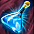
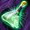
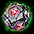
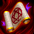
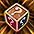
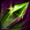

ハロウィンイベント2026
雑学 ＞ 日本のイベント攻略

デイリーミッションでコインを集める交換所、狩りで集めるバスケット、ログイン報酬の3種類です。
| 項目 | 内容 |
|---|---|
| 開催期間 | 2026年10月22日（木）メンテナンス後～11月19日（木）メンテナンス前 |
| コイン交換期限 | 2026年11月19日（木）メンテナンス前 |
| 毎日の更新 | 0時：ミッションの進行可能回数・リスト更新回数 |
| 毎週の更新 | 月曜日0時：バスケットの週間獲得数 |
■デイリーミッション
ミニマップ上の「EVENT」からリストを開き、「開始」を押してから進めます。
達成後は「報酬受領」を押すと、トリックコインがインベントリに入ります。
| 項目 | 内容 |
|---|---|
| 進行回数 | 1日最大6回。同時に進行可能 |
| 報酬 | 1ミッションにつきトリックコイン10枚（6回達成で1日最大60枚） |
| リスト更新 | 1日最大3回。1回10万Gold |
| キャンセル | 完了していないミッションはキャンセル可能 |
| リスト更新の制限 | 進行中・完了済みのミッションは更新不可。同じミッションは再登場しない |
| 日付をまたぐ場合 | 進行可能回数・更新回数は毎日0時にリセット。進行中のミッションはリセットされない |
| 共有範囲 | ミッションの進行内容・リストはサーバー内のキャラクター間で共有 |
| トリックコイン | 取引不可・銀行取引不可。有効期限は2026年11月19日10時 |
| ミッション | 報酬 |
|---|---|
| 累積ログイン30分を記録 | トリックコイン10枚 |
| 自分のLv－200以上のモンスターを100体討伐 | トリックコイン10枚 |
| 「RED STONEのマナ（オーラ）」を3回解放 | トリックコイン10枚 |
| 「混沌の大地」を1回クリア | トリックコイン10枚 |
| 「試練のダンジョン」を1回クリア | トリックコイン10枚 |
| 「アスタロト」デイリー討伐を1回クリア | トリックコイン10枚 |
| 「シュラグ」デイリー討伐を1回クリア | トリックコイン10枚 |
| 「ファルコン」デイリー討伐を1回クリア | トリックコイン10枚 |
| 「悪魔ゲリオ」デイリー討伐を1回クリア | トリックコイン10枚 |
| 「宝箱（宝物地図）」を1回開封 | トリックコイン10枚 |
| モンスターを討伐して100万ゴールドを獲得 | トリックコイン10枚 |
■ハロウィンショップ
ミニマップ上の「EVENT SHOP」で交換できます。交換できるのは11月19日（木）メンテナンス前まで。
交換上限は期間中の回数です。
| アイテム・1回の数量 | コイン | 交換上限 | 用途・条件 |
|---|---|---|---|
 製錬ガードⅡ[E] ×1 | 100枚 | 3回 | 製錬失敗時のアイテム破壊や段階低下を抑える。強化する段階に合わせて使うガード。取引・銀行取引不可。 |
| 80枚 | 3回 | ミニペット合成時、突然変異ミニペットの出現率を上げる。出現は確定ではなく、出現しない場合も合成への影響はない。 出現した場合は、突然変異ミニペットと合成後のミニペットを両方獲得。取引不可。 | |
 製錬ガード[E] ×1 | 80枚 | 3回 | 製錬失敗時の破壊を防ぐ。1～10段階はレベル下落なし、11～20段階はアイテム消滅なし。取引・銀行取引不可。 |
| 50枚 | 3回 | DXオプションのうち1つを選び、成功率100%の魔法のお守りを獲得。取引不可。 | |
| 特製封印解放道具箱[E] ×1 | 50枚 | 3回 | 3種類から道具を選び、封印された力を解放する。すべてのユニークアイテムに使用可能。失敗時のアイテム破壊を防ぐ。取引・銀行取引不可。 |
| 50枚 | 3回 | 剣・鎧・指輪など2個のアイテムを混ぜて1個を作る。称号は片方のアイテムへランダムに移り、すべて消える場合もある。製錬数値は維持されない。 | |
 レプリカ解放オプション変換器[E] ×1 | 50枚 | 3回 | 解放済みオプションをランダムに変換。最低1個の解放が必要。Nxユニーク以外・遺物・指輪・補助武器・投擲機・壊れたアイテムには使用不可。取引・銀行取引不可。 |
| 【HR】確定コクーン[E] ×1 | 50枚 | 3回 | HR等級のネフォンクリーチャー1体を確定で獲得。取引・銀行取引不可。 |
 製錬魔法書[E] ×1 | 30枚 | 3回 | 製錬や称号変換で、出現する称号の数を増やす。取引・銀行取引不可。 |
| 20枚 | 3回 | クリーチャーの餌付け時に使用し、経験値を増やす。材料によって消費数が異なる。取引・銀行取引不可。 | |
| 15枚 | 5回 | 選択したアイテムの指定した称号を1個消す。取引不可。 | |
| 10枚 | 5回 | スーパーユニークアイテムの称号レベルを上げる。付与可能な最高レベルまで強化可能。取引・銀行取引不可。 | |
 幸運のオプション魔法のお守り箱[E] ×1 | 10枚 | 3回 | オプションを付ける魔法のお守りを獲得。獲得したお守りは成功率100%。取引・銀行取引不可。 |
| スロット集中錬成道具箱[E] ×1 | 10枚 | 3回 | Nxユニークアイテムに使用。成功率10%で封印オプションを1個解放する。失敗時もオプション数は変わらない。取引・銀行取引不可。 |
| 10枚 | 20回 | バスケット報酬からアイテムを獲得。取引・銀行取引不可。 | |
| 30枚 | 10回 | ネフォンクリーチャーのマナを30獲得。取引・銀行取引不可。 | |
| 30枚 | 20回 | 冒険家協会の報酬との交換に使う。取引不可。 |
■ハロウィンバスケットドロップ
Lv301以上のキャラクターが、下記のレベル条件を満たすモンスターを倒すと、確率でハロウィンバスケットを獲得できます。
| キャラクターLv | 対象モンスターLv | 例 |
|---|---|---|
| 301～1999 | 自分のLv－100以上（上限なし） | Lv1500ならLv1400以上 |
| 2000以上 | 自分のLv－50以上（上限なし） | Lv2000ならLv1950以上 |
| 項目 | 内容 |
|---|---|
| 獲得上限 | 週50個。毎週月曜日0時にリセット |
| 共有範囲 | ドロップイベントの進行内容はサーバー内のキャラクター間で共有 |
| 受け取り | インベントリに入る。空きがない場合はフィールドにドロップ |
| 取引制限 | 取引不可・銀行取引不可 |
■バスケットの中身
| レア度 | アイテム | 数量 | 用途・条件 |
|---|---|---|---|
| ★★★ | 1 | サキュバスヴェラを獲得。取引・銀行保管不可。 | |
| ★★★ | 1 | HR・サポート型「ナースヴェラ」（Lv1）を獲得。最大体力Lv24、最大CP Lv12、被ダメージCP変換Lv12。ゴールド自動獲得200Pixel、下級地形Lv1・恐怖Lv1。取引・銀行取引不可。 | |
| ★★★ | 1 | HR・大地型「イブニングドレスヴェラ」（Lv1）を獲得。魔法攻撃力強化Lv24、魔法抵抗力低下Lv3、最大CP Lv12。ゴールド自動獲得200Pixel、地下界Lv1・暗闇Lv1。取引・銀行取引不可。 | |
| ★★★ | 製錬ガード[E] | 1 | 製錬失敗時の破壊を防ぐ。1～10段階はレベル下落なし、11～20段階はアイテム消滅なし。取引・銀行取引不可。 |
| ★★★ | レプリカ解放オプション変換器[E] | 1 | 解放済みオプションをランダムに変換。対象・制限は交換所の同名アイテムと共通。取引・銀行取引不可。 |
| ★★ | 1 | ミニペット合成時、突然変異ミニペットの出現率を上げる。出現は確定ではなく、出現しない場合も合成への影響はない。出現時は合成後のミニペットと両方獲得。取引不可。 | |
| ★★ | 1 | レイド経験値をLv1～849は2倍、Lv850以上は6倍にする。Lv2001以上は経験値を得ず消滅。取引・銀行取引不可。 | |
| ★★ | 1 | 10分間、最大HP＋30%。取引・銀行取引不可。 | |
| ★★ | 1 | 10分間、最大CP＋30%。取引・銀行取引不可。 | |
| ★★ | 1 | 10分間、すべての能力値＋100。取引・銀行取引不可。 | |
| ★★ | 1 | HP・CPをそれぞれ30%即時回復。取引・銀行取引不可。 |
おばけカップケーキ・かぼちゃチョコレート・ドクロクッキー・ぐるぐるキャンディーの有効期限は、2026年11月19日10時です。
■ログインチェック
イベント期間中、ログインすると毎日報酬を受け取れます。ログイン報酬はすべて取引不可です。
| ログイン日数 | アイテム | 数量 | 用途・条件 |
|---|---|---|---|
| 1日目 | 1 | 冒険家協会の報酬との交換に使う。 | |
| 2日目 | 1 | HP・CPをそれぞれ80%回復。 | |
| 3日目 | 製錬魔法書[E] | 1 | 製錬や称号変換で、出現する称号の数を増やす。銀行取引不可。 |
| 4日目 | 1 | HPを30%即時回復。再使用まで時間が必要。 | |
| 5日目 | 風の羽[E] | 1 | ワールドマップからフィールドへ移動。銀行取引不可。 |
| 6日目 | 1 | 死亡ペナルティー時間を90%減らし、30秒間、最大HPを200%にする。 | |
| 7日目 | 2 | 10分間、CPを最大値に維持。同効果の重複使用不可。 | |
| 8日目 | ソーラーコクーン[E] | 1 | ネフォンクリーチャーを獲得。銀行取引不可。 |
| 9日目 | 100 | 魔力インクの溶解剤で抽出された、魔力を含むインク。 | |
| 10日目 | 2 | 10分間、CPを最大値に維持。同効果の重複使用不可。 | |
| 11日目 | 1 | ネフォンクリーチャーのマナを100獲得。銀行取引不可。 | |
| 12日目 | 1 | HPを100%即時回復。連続使用不可。銀行取引不可。 | |
| 13日目 | 1 | 装備の能力を上げる強化石。 | |
| 14日目 | 2 | バスケット報酬からアイテムを獲得。銀行取引不可。 | |
| 15日目 | 100 | ディメンション・ハブの報酬で得られる結晶。 | |
| 16日目 | 3 | 10分間、CPを最大値に維持。同効果の重複使用不可。 | |
| 17日目 | 2 | バスケット報酬からアイテムを獲得。銀行取引不可。 | |
| 18日目 | 1 | Lv2000未満のキャラクターのモンスター討伐経験値が60分間150%増加。他の果実と効果が重複し、併用でさらに増加。銀行取引不可。 | |
| 19日目 | 2 | 10分間、CPを最大値に維持。同効果の重複使用不可。 | |
| 20日目 | レプリカ解放オプション変換器[E] | 1 | 解放済みオプションをランダムに変換。対象・制限は交換所の同名アイテムと共通。銀行取引不可。 |
| 21日目 |  リフレクティング・シャード[E] | 1 | 火・水・風・大地・闇・幻のいずれかのミニペットを召喚。召喚したミニペットと30日間過ごせる。30日を超えて一緒にいるにはシャード2個が必要。銀行取引不可。 |
■おすすめの進め方
ログイン報酬は21日目まで受け取る
20日目のレプリカ解放オプション変換器[E]に続き、21日目にはリフレクティング・シャード[E]を受け取れます。ミニペットを使う人は最終日まで進めたいところです。普段の日課を始める前にログイン報酬を受け取り、21日目まで取り切りましょう。
トリックコインは普段の日課で1日60枚を狙う
ミッションを先に「開始」し、ログイン30分・100体討伐・100万Gold・オーラ3回・宝物地図・デイリー討伐を普段の狩りと重ねます。リストに出ているものを選び、達成後は「報酬受領」まで済ませましょう。6件で60枚です。
| 進め方 | 選ぶミッション | 立ち回り |
|---|---|---|
| 普段の狩りと重ねる | 100体討伐・100万Gold・オーラ3回・宝物地図 | バスケットも集めるなら、Lv1500はLv1400以上、Lv2000はLv1950以上の狩場へ |
| 接続時間と日課を使う | ログイン30分と、アスタロト・シュラグ・ファルコン・悪魔ゲリオのうち対象のデイリー討伐 | デイリー討伐は基本1日1回。RSPASSの討伐ミッションとも重ね、許可券を使う追加討伐を前提にしない |
| 重いミッションが残った | 1回10万Gold、1日3回までのリスト更新を使う | 進行中は更新できないので、残すミッションを選んでから更新。入場素材を使う混沌・試練をコインだけのために追加しない |
上の6種類が必ず同時に出るわけではありません。宝物地図などが進まない日はリストを見直し、続けられる日課へ切り替える形です。キャラクターを替えても、サーバー内で共有する進行回数は増えません。
使う装備に合わせて、交換する道具を決める
| アイテム | 必要コイン | おすすめする場面 |
|---|---|---|
| スロット集中錬成道具箱[E] | 10枚／個 3個で30枚 | Nx装備の封印オプションを増やすなら先に確保。1回の成功率は10%で、失敗時もオプション数は変わらない |
| 特製封印解放道具箱[E] | 50枚／個 3個で150枚 | 封印解放を進める装備がある人向け。失敗時の装備破壊を防ぎながら試したいときに選ぶ |
| レプリカ解放オプション変換器[E] | 50枚／個 3個で150枚 | 解放済みオプションを変更する装備がある人向け。最低1個の解放が必要なので、使う装備の解放状況も確認する |
| ミニペット変異促進剤ゴールド | 80枚／個 3個で240枚 | 突然変異ミニペットを作る人の優先候補。Lv100・異なる属性のミニペット2体を用意して選ぶ。突然変異率は30ポイント上昇 |
| 製錬ガードⅡ[E] 製錬ガード[E] | Ⅱは100枚／個 通常は80枚／個 各3個まで | 製錬する装備と段階を決めて確保。使う段階に合うガードを選ぶ |
| 運命のOP選択チケット 【HR】確定コクーン[E]など | 各50枚／個 | 付けたいDXオプションや、クリーチャー育成の目的に合わせて追加する |
例えば、スロット集中錬成道具箱3個・特製封印解放道具箱3個・レプリカ解放オプション変換器3個なら合計330枚。1日60枚を受け取れれば6日分で揃います。使う予定の道具を先に選び、ミニペット合成や製錬を進める人は、その分の必要コインも残しておきましょう。
バスケットは普段の狩りと重ねて集める
育成や素材集めをする狩場で、バスケットのドロップ対象Lvも満たすようにします。ドロップは週50個までで、毎週月曜日0時にリセット。コイン交換のバスケットは1個10枚・期間中20回までなので、使いたい道具を確保した後のコインで選ぶとよさそうです。
ミニペット変異促進剤は何に使う？
Lv100の異なる属性のミニペット2体を合成するときにセットし、突然変異ミニペットの出現率を上げる道具です。通常・シルバー・ゴールドは、それぞれ10・20・30ポイントを基本確率へ加算します。ゴールドでも必ず突然変異が出るわけではありません。
変異促進剤の種類と確率の比較、ミニペット合成の手順、ミニペットシミュレーターを参照。ネフォンクリーチャーの育成素材ではありません。
受け取るキャラクターと期限
トリックコインとバスケットは銀行へ移せないので、使いたいキャラクターで受け取ると扱いやすいです。ミッションとドロップの進行はサーバー内で共有されます。
ログイン報酬の受け取りと、11月19日（木）メンテナンス前までのコイン交換を済ませましょう。おばけカップケーキなど期限付きのお菓子は、11月19日10時までに使い切ります。